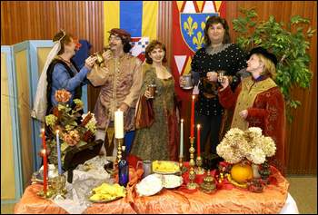

|
By
Jessica Drake, Feature Writer

The annual Renaissance Feast revives the flavor, setting, live entertainment and mouth-watering cuisine of an authentic medieval banquet. This year's feast will take place at 7 p.m. Saturday, Oct. 18, at the Florence-Lauderdale Coliseum. JIM HANNON/TimesDaily. October is time-travel month in the Shoals. The Florence we know today becomes the Florence of Italy in the 12th through 16th centuries during this Renaissance Month. "I love it," says Ashley Hurst, a University of North Alabama student. "It's like living in a fantasy world for a weekend," Hurst says of the Alabama Renaissance Faire, held the fourth weekend of October. Authentic costumes play a major role in creating that illusion. "The more costumes there are, the more festive the atmosphere," said Billy Ray Warren, chairman of the Renaissance Roundtable. "People who come in costume come for more than entertainment. They come to participate." For Shoals residents who wish to dress the part during faire activities, authentic costume-creation help is available. There will be a free costume-making workshop Saturday from 9 a.m. to 2 p.m. at the studio in the back yard of Kennedy-Douglass Center for the Arts. Anyone desiring a costume need only bring three yards of fabric and themselves. "The person will be measured, the pattern will be marked, cut out and sewn," says Warren. "This is our 17th year with the costume-making workshop and we have it down to a fine art." For the most authentic costume, the design and color of the fabric should be similar to what was available at the time. "Solid fabrics and earth tones are always good," says Warren. "For a nobility costume, you can go so far as to use brocade. I would stay away from floral patterns because the looms at the time would not have been able to make those designs." According to Warren, the clerks at Wilson Fabric Center and Hancock Fabrics in Florence are helpful when it comes to choosing authentic fabrics. Costumes made at the workshop are fairly simple, tunic-style costumes that can be dressed up or down with belts, scarves, jewelry, hats and other accessories, depending on the imagination of the designer. "When you see them at the faire, you'll never know it was just a basic costume," Warren said. "People dress as beggars, peasants, gentry, nobility and members of the church." Hurst, who belly-dances at the faire, said, "I decided that I wanted an authentic Renaissance costume. "A friend and I saw gypsy costumes one year and thought that would be something we would like to do. "We had all these layers of clothes on and daggers tied around our waists," Hurst said. "We thought it was really cool." The Renaissance Feast on Saturday, Oct. 18, offers a night of food and entertainment in the Renaissance style. "We start decorating Friday night and work all day Saturday. By that night, it looks grand," says Warren. "The chef, known as Master Huen, is Jim Matterer from West Virginia," said Warren. The menu is based on authentic medieval-Renaissance recipes. "Since the king this year is a wizard, the food this year will be an illusion. It will look like one thing but be another," says Warren. "It will all be delicious." There will be interactive entertainment for those who want to participate. "We have a herald to announce everyone as they enter," Warren said. "People will be able to go up to the high table and present themselves before the king. Everyone will have the chance to join in a medieval dance that will be taught on the spot." "There will be a live chess game with people as the chess pieces," Warren said. The feast features an exciting dessert to end the evening. "Our coin-of-the-realm this year has Merlin engraved on it," said Warren. "A coin will be placed in one of the final desserts. The person who finds the coin in their dessert gets to be the king or queen of next year's faire." WANT TO GO? Renaissance Costume-Making Workshop - 9 a.m.-2 p.m. Saturday, Kennedy-Douglass Center for the Arts, 217 E. Tuscaloosa St., downtown Florence (free) Renaissance Feast - 7 p.m. Saturday, Oct. 18, Florence-Lauderdale Coliseum, 702 Veterans Drive, Florence ($20 per person, tickets on sale at Anderson's Bookland and the Kennedy-Douglass Center for the Arts, both in downtown Florence) Alabama Renaissance Faire: - 10 a.m.-6 p.m. Saturday, Oct. 25, and noon-6 p.m. Sunday, Oct. 26, Wilson Park, downtown Florence (free) This page © 2003 Gode Cookery http://www.godecookery.com
|

BACK TO: Alabama Renaissance Faire
A Boke of Gode Cookery Alabama
Renaissance Faire
Alabama
Renaissance Faire
© James L. Matterer
Please visit The Gode Cookery Bookshop